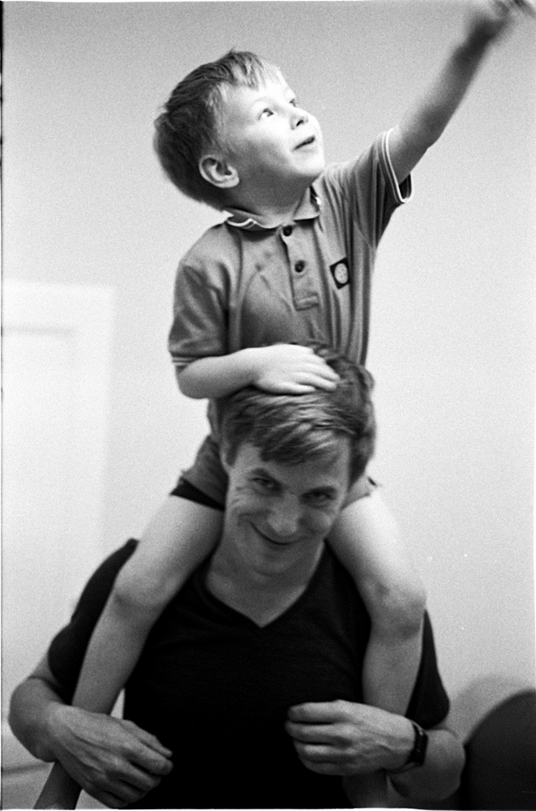

I remember something. I think that's the earliest thing I can remember. I don't remember much. Almost nothing. But for some reason my memory has saved that moment for me.
It is summer. It is windy and sunny. I hear the grass movement. Sun beam blinds me. I hear voices. Can't recognize them. Everything moves. I'm sitting on the shoulders of one of parents friends. We're walking somewhere far away.
That's it. Nothing else. Just one single tiny moment. Not a memory but rather a feeling. A touch.
Zakhar sitting on Sasha's shoulders, Belgrade, 2023